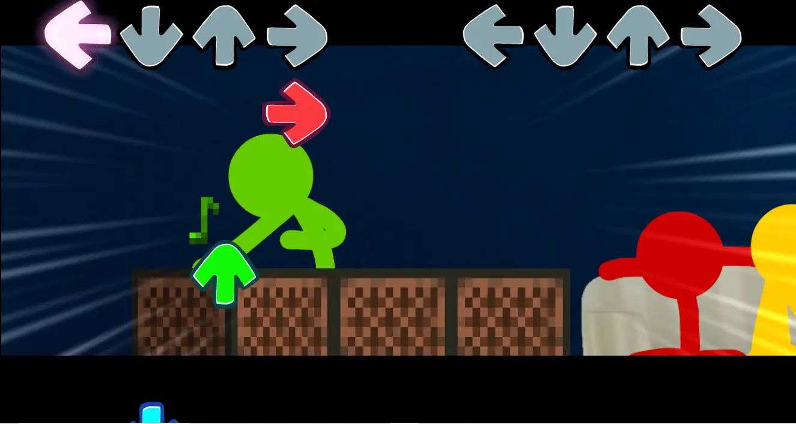
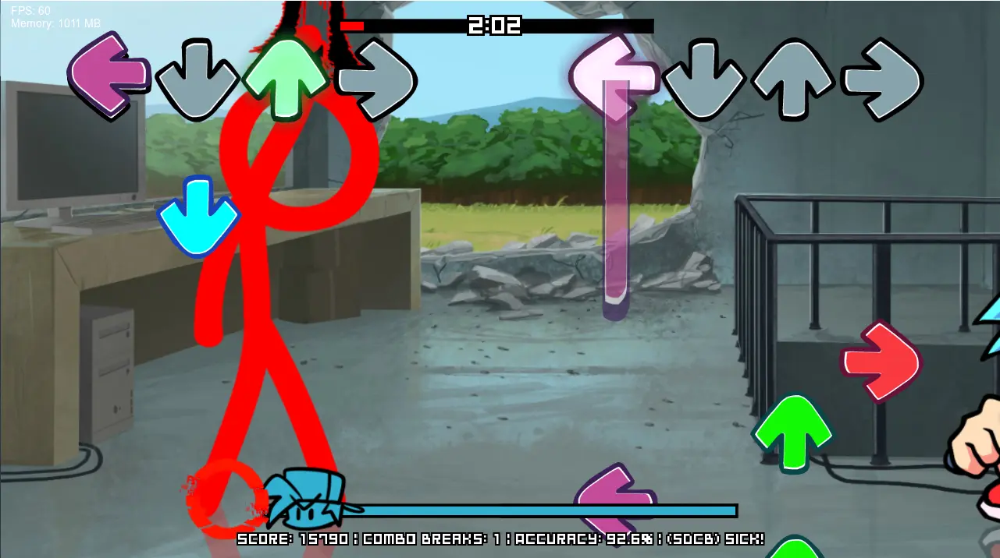
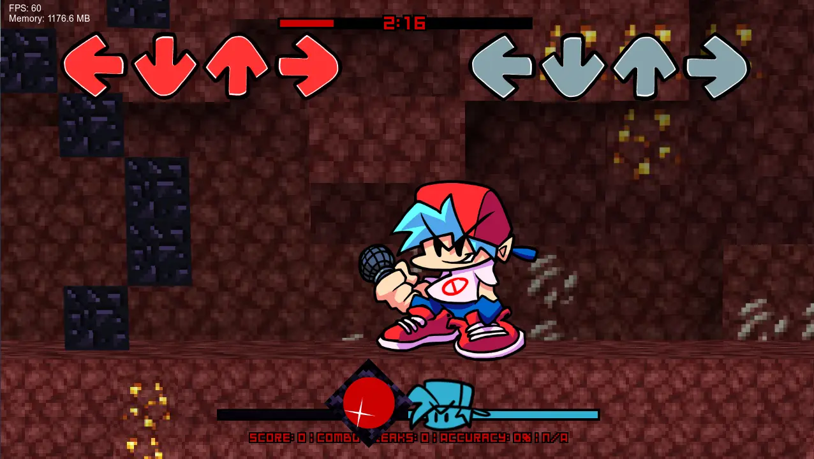

Face off against the world's most popular stick figures in a whole new way!
When our protagonists discover a strange new game on ALANSPC, it opens the door for a new adventure full of.... singing?
SO.... WHAT... IS THIS?
Animation VS. Friday Night Funkin' (or AVFNF or even AVF for short), is a nonprofit Friday Night Funkin' mod about the works of Alan Becker & those inspired by him.
This is the 2nd update to the full mod which released in October 2022, which came after the demo which released earlier that year.
All characters & works used in the mod are creations of Alan Becker, Funkin' Crew, Mojang, etc.
AVF: EPISODE 2 - WHAT'S IN STORE
We've got a lot in store for this next update.
For starters, almost every song from the last version is being remastered. Some by their original composers like Vengeance & Fallen, while other classics get remade by new faces like Repeater.
In terms of new stuff, you won't be disappointed either. We have over 30 all new tracks, bringing the total song count to around 41! A lot of our songs have all new mechanics which adds extra challenge. With these new songs, we're trying to up the quality, spectacle, & overall create an experience that leaves V1 in the dust. That, and we have an intriguing story tying it all together.
All in all, Episode 2 is set to be the ultimate Alan Becker Friday NIght Funkin' experience.
NEW OPPONENTS
Don't forget this mod has over 40 songs. Did you really think all of them would be the same old guys?
Many new challengers will face you such as iconic Alan Becker characters like Herobrine & the powerful King Orange. As well as other characters like The Deserved One. Anyone of your favorite characters could appear in the mod. You'll just have to wait & see ;)
TEASERS
SCREENSHOTS



TRAILER
CLOSING STATEMENTS
Thank you for being patient with us. We're all working as hard as possible to get the mod done, & get it in the best state it can be. We don't know when the next update will be released, but chances are it'll probably be some time in 2024. From the bottom of our hearts, thank you for all the support you've given us. We'll make sure V2 will be worth the wait.